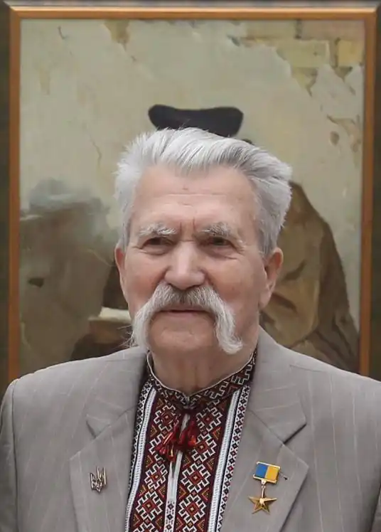
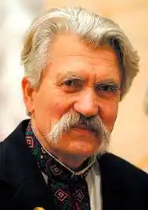
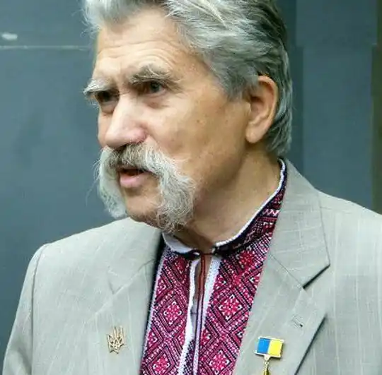

Народився 24 серпня 1928 року у селянській родині Грицька й Наталки Лук'яненків у селі Хрипівка. Був найстаршим з чотирьох дітей в родині. Матір походила з козацького роду Скойбидів. Левко Лук'яненко зміг пережити Голодомор 1932—1933 років, від голодної смерті навесні 1933 року їх врятував батько, приховавши трохи картоплі в ямі під стежкою. Наприкінці 1944 року, коли юнаку минуло 16, його рекрутували в ряди Радянської армії. З 1945 по другу половину 1949 роки служив в Австрії. Під час навчання у школі автомеханіків у місті Мьодлінг протягом 1948 року почав захоплюватися літературою.
Приблизно до другої половини 1949 року Левку Лук'яненку захотілося повернути до України, вступивши до автомобільного училища, що нібито було у Києві. Проте в результаті він опинився не в Україні, а на Закавказзі, у містах Орджонікідзе та Нахічевань.
У 1951—1953 роках вступив у комсомол і партію. 1953 року вступив на юридичний факультет Московського університету. 1954 року — одружився. Вів активне громадське життя. До 1956 року зрозумів, що обраний ним шлях помилковий, призупинив свою громадську діяльність і вирішив орієнтуватися на підпільну боротьбу. У вересні 1958 року, за розподілом був спрямований штатним пропагандистом райкому партії в Радехівський район Львівської області, де й оселився з дружиною. Робота була пов'язана з постійними поїздками по селах району. Він бачив, як людей заганяли в колгоспи, знищували цілі хутори. Разом зі Степаном Віруном і Василем Луцьківим вирішили створити підпільну партію Українська Робітничо-Селянська Спілка (УРСС). У середині 1959 року переїхав до Глинянського району і, щоб мати більше вільного часу, з райкому перевівся в адвокатуру. Тут він знайшов однодумців Івана Кандибу та Олександра Лібовича. 7 листопада 1960 року у Львові відбулася перша організаційна зустріч, на якій обговорили програму. Але 21 січня 1961 року був заарештован. У травні 1961 року Львівський обласний суд засудив Лук'яненка до розстрілу за ст. 56 ч. 1 і 64 КК УРСР. Звинувачення було побудоване на першому проєкті програми УРСС. Через 72 доби Верховний Суд замінив розстріл 15 роками позбавлення волі. Покарання відбував у Мордовській АРСР, з 1967 року три роки у Володимирському централі, потім знову в Мордовії. 1966 року в Мордовські табори прибувала нова генерація політв'язнів — шістдесятників. Вони вели боротьбу з адміністрацією таборів за фактами грубого порушення законодавства і прав в'язнів. Дані про цю боротьбу ставали відомими світовій громадськості. Лук'яненко брав в цій боротьбі активну участь. У березні 1988 року був заочно обраний головою відновленої УГГ, яка від 7 липня діяла, як Українська Гельсінська Спілка (УГС). 23 квітня 1988 року запропонували виїхати за кордон, але він відмовився, бо бачив, що ситуація в країні швидко змінюється, вимальовується перспектива створення політичної партії. Указом ПВР від 30 листопада 1988 року Левко Лук'яненко був помилуваний, звільнений із заслання. На початку 1989 року повернувся до України. Левко Лук'яненко — автор Акта проголошення незалежності України від 24 серпня 1991 року. У травні 1992 року склав повноваження депутата і залишив посаду голови УРП у зв'язку з призначенням Надзвичайним і Повноважним послом України в Канаді. У листопаді 1993 року через незгоду з політикою уряду України подав у відставку і повернувся в Україну. 7 липня 2018 року стало відомо, що Левко Лук'яненко потрапив у реанімацію клінічної лікарні "Феофанія" з інсультом та запаленням легень. Пізніше того ж дня Левко Лук'яненко помер у лікарні "Феофанія" після тривалої хвороби, спричиненої лейкозом, проблемами з тромбами та лейкоцитами, наслідками інсульту.